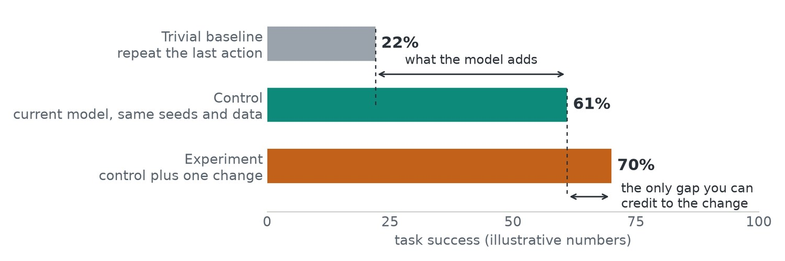
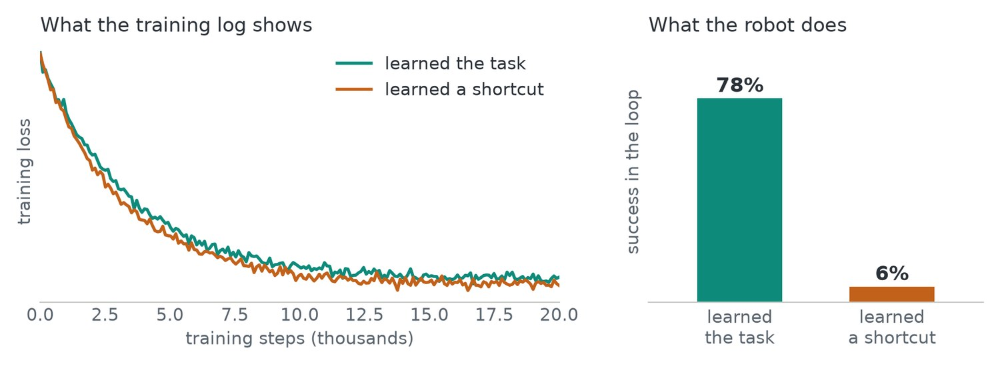
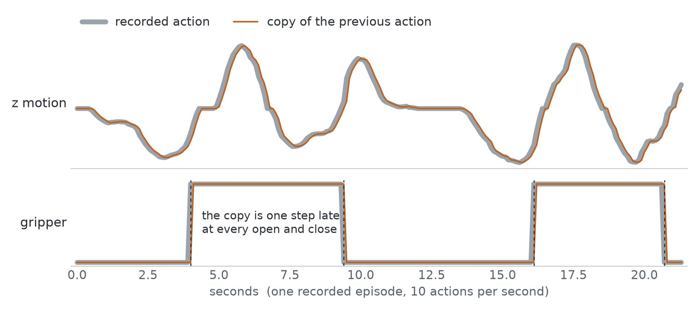

Six principles that outlast any model
Model names change every few months. These habits do not, and they decide whether a project works more often than the choice of architecture does.
- Data beats clever algorithms. The scale, variety and quality of the data set the ceiling. A better dataset usually helps more than a new architecture, and the largest recent gains in robotics came from more varied data.
- General methods that scale win. This is Rich Sutton’s “bitter lesson”: methods that improve with more data and compute keep overtaking methods that encode human knowledge by hand. Prefer designs that get better as the data grows.
- All models are wrong. A good score on held-out data is not a working robot. Judge a model in the loop it will actually run in.
- Failing models don’t throw exceptions. A broken pipeline still produces a loss curve. The only way to know is to look at the inputs, labels and outputs yourself.
- Evaluation leaks. Every choice made against the test set moves a little of it into the model. Public benchmarks may already be in the pretraining data.
- One variable per experiment. Change one thing, keep a matched control, and know what a trivial baseline scores before you start.

Silent failure: what it looks like
Deep learning code fails quietly. Nothing crashes, the loss goes down, and the model has still learned the wrong thing. Four failures account for most of these cases.

| Failure | What happened | Symptom |
|---|---|---|
| Label or input bug | Images and labels are misaligned, normalisation is wrong, or two cameras are swapped | The loss falls slowly and levels off high |
| Data leak | Test samples, or near-copies of them, are in the training set | The validation score looks too good |
| Shortcut learning | The model uses a cue that happens to correlate with the answer | Great on the benchmark, fails in new scenes |
| Evaluation bug | The metric is computed on the wrong split or the wrong output | The numbers do not match what you see |
Shortcut learning deserves a closer look because it is the hardest to spot. A classifier can learn the background in place of the object. A robot policy can learn to copy its previous action from its own joint readings and look fine on recorded data, then freeze on the real robot.

That is why the dumb baseline matters. On recorded data, “repeat the last action” is a strong score to beat, and a model that only matches it has learned nothing about the task.
Habits that catch it
- Look at the data. View raw samples after every transform, not before.
- Overfit one batch. If the model cannot memorise ten samples, there is a bug.
- Beat a dumb baseline. Compare with “predict the mean” or “repeat the last action”. If you cannot beat it, stop and find out why.
- Ask what shortcut exists. Could the model score well without solving the task? Design a test that separates the two.
- Test in the loop. Run the policy. Do not only score it.
A falling loss proves that the code runs. It does not prove the model learned what you intended.
Common mistakes
- Changing the model first. When a result surprises you, check the data and the evaluation before touching the architecture.
- Trusting an aggregate. One average hides which cases fail. Break results down before drawing a conclusion.
- Skipping the control. Without a matched run that differs in one way, an improvement cannot be attributed to anything.
Terms
- Baseline
- The simplest method that could plausibly work; the number to beat.
- Control
- A run identical to the experiment except for the one thing being tested.
- Shortcut
- A cue that predicts the answer in the training data without the task being solved.
- Leak
- Information from the test set reaching the model during training or tuning.